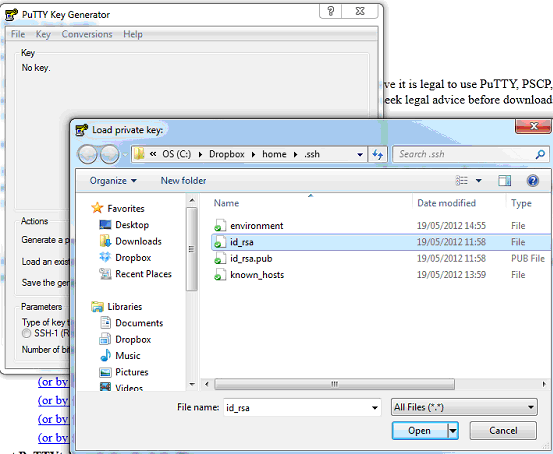
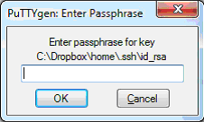
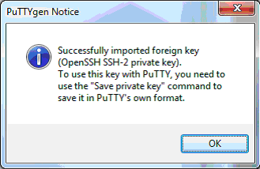
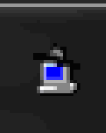
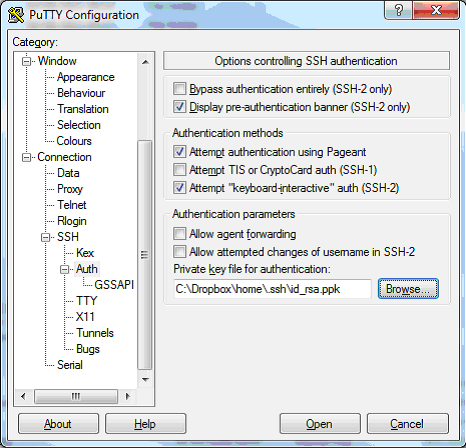
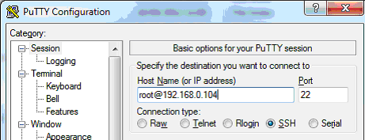
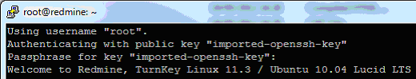

Other Build Book Posts
Posts in the Build Book sequence are intended primarily as an aide-mémoire for myself; a series of steps to go through for a consistent build experience. They tend to be to the point, prescriptive and tailored for me personally.
How SSH Works
SSH stands for “Secure Shell”. As its name implies it is a network protocol for secure communication between two computers, a server - your VM - and a client, e.g. your work or home PC. The most basic type of communication SSH supports is shell access - you use a terminal emulator to open a Unix shell on the server, which then allows you to use the full gamut of Unix commands to administer the machine. Layered on top of the basic SSH protocol are higher level protocols such as secure copy (scp) and secure ftp (sftp), which are useful for copying files into and out of the VM. SSH allows you to login to a remote machine without a password. There is an SSH server running on the remote machine. It listens for SSH connection requests from client machines. When it receives a connection request it validates the public key from the client against a copy stored (on the server) in the relevant user’s authorized_keys file. To setup the client you first generate a public/private key pair on that machine. You copy the public key up to the server and keep the private key on your client machine. (Some people use multiple private keys, one per user or one per client, others choose to share them. Whatever you choose to do you should think of the private key as a “super password”, and keep it secret just as you would do a password.) The server is usually installed when you build a VM, but it can be installed later with this command. No other configuration should be required:
sudo apt-get install openssh-server
Further Reading
PuTTY’s documentation is an excellent guide to SSH:
http://www.chiark.greenend.org.uk/~sgtatham/putty/docs.html
Other useful links:
http://en.wikipedia.org/wiki/Secure_Shell
http://www.wikihow.com/Use-SSH
http://www.cyberciti.biz/tips/linux-unix-bsd-openssh-server-best-practices.html
http://www.howtoforge.com/ssh-best-practices
http://sitaramc.github.com/gitolite/glssh.html
Creating a Key
Open a prompt and type:
ssh-keygen -t rsa -b 2048
This generates an RSA-2 type key of size 2048 bits. These are the defaults and are considered secure. You can leave the passphrase blank but if you do this it means that anyone who gets hold of your private key file will be able to logon to the VM without a password. On the other hand, if you enter a passphrase you will be asked to enter the passphrase again each time you use the key. It effectively functions as a “super long password”. You should use a passphrase which is fairly long but easy to remember and with a mixture of upper and lower case. There are utilities available that you can run which means you only have to enter it once per session - see the section below, “Typing your PassPhrase only once”. You should name the file “id_something” because various SSH utilities pattern match against that. There are two files created – id_phil which is your private key - do not copy this up to any servers! - and id_phil.pub which is the public key which you copy up to Github or a VM.
Enabling SSH up to a Server
When you SSH to the server, you are doing it as a particular user, e.g. root. In
that user’s home folder there needs to be a file, ~/.ssh/authorized_keys, to
which we will append the public key. You can do this manually, but it is easier
to use the ssh-copy-id program:
ssh-copy-id -i ~/.ssh/id_phil phil@NEWVM
To do it manually, you can just open the authorized_keys file in a text editor and paste the “.pub” key in - each key is on a separate line. Here is a complete manual script to do this. First, on the VM, do this to create the file if it does not already exist:
mkdir -m700 .ssh
touch .ssh/authorized_keys
chmod 600 .ssh/authorized_keys
Then on the client, do this to copy your public key to the server and append it to the authorized_keys file:
cat ~/.ssh/id_phil.pub | ssh root@NEWVM "cat >> ~/.ssh/authorized_keys"
Adjust ‘id_phil’ and ‘root@NEWVM’ as appropriate.
Pay careful attention to the punctuation! The right angle-brackets must be double as shown, or you’ll wipe out any keys you already have; and the quotes must be as shown, or you won’t get the desired result. Also be careful to cat the public file, not the private one, this is an easy mistake to make if you are using tab-completion to enter the filename.
Using multiple key files
My .bashrc now looks like this:
KeyFiles=`find ~/.ssh -type f ! -name "*.*" -name "id*"`
eval `keychain --quiet --eval "$KeyFiles"`
And hence runs keychain for both my personal and work ssh keys.
Installing a key on Unix Servers
If you want to install your public key itself (so that it is available when you login to the console) then you can do so like this:
Or using scp:
scp ~/.ssh/id_phil phil@NEWVM:~/.ssh/id_phil
Or using sftp:
sftp phil@NEWVM
cd ~/.ssh
put id_phil
chmod 600 id_phil
Setting up Forwarding
Forwarding allows you to SSH out from the server you just SSH’ed into. This can
be as innocuous as using Git over SSH. Edit the file ~/.ssh/config and add the
following lines:
ForwardAgent yes
ForwardX11Trusted yes
This is considered somewhat insecure, but is fine for non-production use. See
man ssh_config for details on how to restrict forwarding to particular hosts.
If it’s not working, check that forwarding is enabled on the server:
cat /etc/ssh/sshd_config | grep X11
There must be a line “X11Forwarding yes” for this to work.
To forward X, do this on the client:
ssh [-v] -Y phil@destination
The -Y option supercedes the -X option. The -v is verbose help. To confirm that ssh is forwarding X11, check for a line containing “Requesting X11 forwarding” in the output.
Using X from my Cygwin setup
Create this file. It will start X and keep it running, but not start any programs (this is actually part of my default Cygwin dotfiles):
echo "sleep inf" > ~/.startxwinrc
Then:
[Cygwin] runx # Start X server on Cygwin.
[Cygwin] ssh -Y phil@NEWVM # DISPLAY is already setup by ~/.bashrc
[NEWVM] xeyes &
One problem is that Gnome apps do not work properly over SSH, they don’t display their theming which makes them look a bit ugly. For a possible solution see http://superuser.com/questions/69174/x11-looks-ugly-while-opening-a-remote-window-from-ssh-can-i-use-gtk-themes/69175#69175
Debugging
http://x.cygwin.com/docs/faq/cygwin-x-faq.html#q-ssh-no-x11forwarding
http://unix.stackexchange.com/questions/12755/how-to-forward-x-over-ssh-from-ubuntu-machine
Installing SSH keys on Github and Bitbucket
Login to Bitbucket (you can do this using a Google login). Go to the Management
screen, there you will see a page for “SSH keys”. Simply open the id_*.pub file
and paste it in.
Login to Github (you must use a UID and PWD to do this). Go to Account Settings,
there you will see a page for “SSH keys”. Simply open the id_*.pub file and
paste it in.
Using the SCP command
After setting up SSH you can use the scp (secure copy) command. Watch out for permissions on the transferred files. To copy from a client to the VM, run this command in the client:
scp myfile root@NEWVM:dest_file_name
To copy an entire folder:
scp -r mydir root@NEWVM:dest_dir
To copy using tar (handy for arbitrary lists of files):
tar -cf mydir/* | ssh root@NEWVM 'tar -xf -'
Using SSH with Windows apps
Both FileZilla and WinSCP are Windows programs and do not support unix-format
SSH keys. Such keys need to be converted to a Putty private key and you should use
Pageant to cache the key. There are 3 programs involved, which are installed by
Chocolatey into C:\ProgramData\chocolatey\bin:
- PuTTYgen.exe - used to create keys
- Pageant.exe - this is the agent used to hold keys in memory
- PuTTY.exe - this is the client used to establish a connection to the VM
(From http://meinit.nl/using-your-openssh-private-key-in-putty and https://wiki.filezilla-project.org/Howto)
You can use PuttyGen to create a completely new key pair, or you can import an existing key such as a Unix key. In this example I’ll assume you have an existing Unix key and want to also use it in PuTTY (if you don’t have an existing key the only difference in the process is you need to hit the Generate button instead of the Load button). Start PuTTYgen, press Load and select your Cygwin private key file:

Enter a description, otherwise you won’t be able to tell which passphrase to use when Pageant asks you for it. Enter your passphrase when prompted:

You will get this self-explanatory message:

Press Save Private Key and create the file “id_rsa.ppk”. PPK is PuTTY’s private key format.
Setting up Pageant
The PuTTY suite’s equivalent of ssh-agent is called Pageant. When started it appears in the notification area as a VERY small computer with a hat on!

Bring up its window, press Add Key, and browse for your ppk file. You are asked for your passphrase again. You’re done. Pageant now has your key in memory and has validated your passphrase. It’s a good idea to add a Pageant shortcut to your Startup folder:
Target = \\Path\To\Pageant.exe id_phil.ppk other.ppk
Start in = C:\Users\Phil\.ssh
Then in FileZilla, just enter
Host = sftp://servername
User = theuser (the user on the server)
Password = leave blank
Port = 22 (or leave blank, it's the default for sftp)
If you can’t get the SSH key to work, you can make a password-authenticated connection in FileZilla using:
Host = sftp://servername
User = theuser
Password = the pwd
Port = 22
Installing Keys on servers using PuTTY
You need to somehow get the public key into the user’s authorized_keys file. The easiest way is probably to use PuTTY’s secure FTP program to pull a copy of the file down to your client, paste in your new key, then push it back up. Test the connection using PuTTY itself. Under the SSH, Auth section specify the PPK file:

Then create a new session to the VM:

You will be asked for your passphrase:

SSH in Visual Studio
I had to create an environment variable GIT_SSH in Windows to get Visual Studio to use SSH. Its value is
GIT_SSH=C:\Users\pdaniels\AppData\Local\SourceTree\app-2.6.10\tools\putty\plink.exe
This variable must NOT be set for Cygwin or WSL, otherwise it interferes with normal git remote operations on those systems.